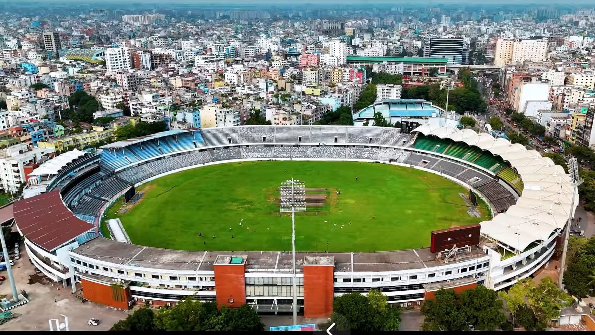

Cricket is our heartbeat
Cricket is the most loved sport in Bangladesh. When the Tigers play, streets go quiet, tea stalls crowd around one television, and a single boundary can set off cheering across a whole neighbourhood. The team wears green and red, the colours of the national flag.
This site is a small guide for fans. You can read about the national team, meet five of its biggest stars, explore the stadium where the crowd is loudest, and check some of the proudest moments in the team's history. Use the menu at the top to jump to any page.


Follow the action: ESPNcricinfo · Bangladesh Cricket Board